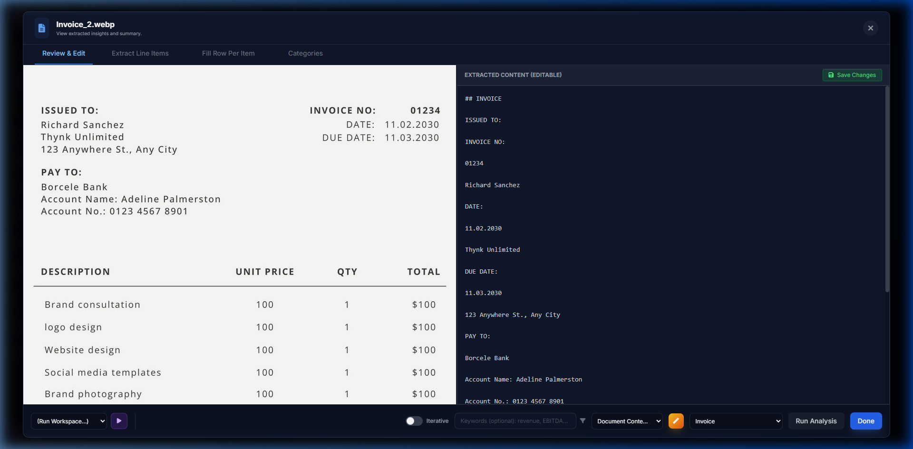

Tutorial 1: First Document Analysis
Learn the absolute basics of Parsifi: uploading a document, running OCR, and extracting information using a simple prompt.
1. Upload a Document
Navigate to the Dashboard. Drag and drop any PDF document (like an invoice or a news article) into the upload zone.
2. Verify OCR
Once uploaded, click on the document in the Recent Uploads list. You will be taken to the Document Viewer.
Toggle from the "Original PDF" view to the "Raw Text" view. Parsifi has automatically run the document through IBM Docling to convert it to Markdown.

3. Run an Analysis
In the right-hand panel of the Document Viewer, find the Analysis tab.
Type a natural language question in the prompt box, for example: "Summarise this document in three bullet points."
Click Run Analysis.
Verify Success: The LLM should stream a response back into the chat window, accurately summarising the content of your uploaded document based on the prompt.